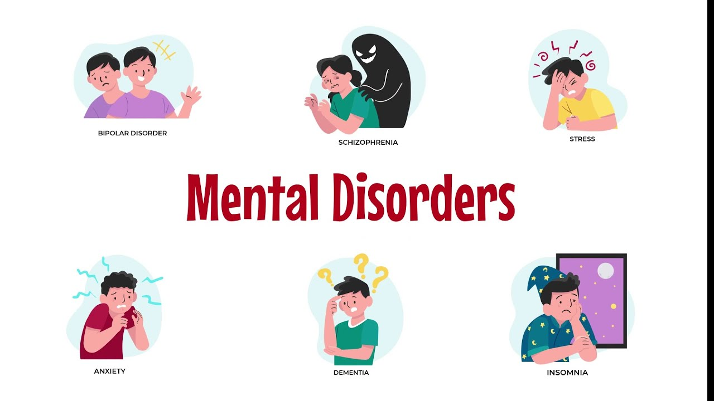
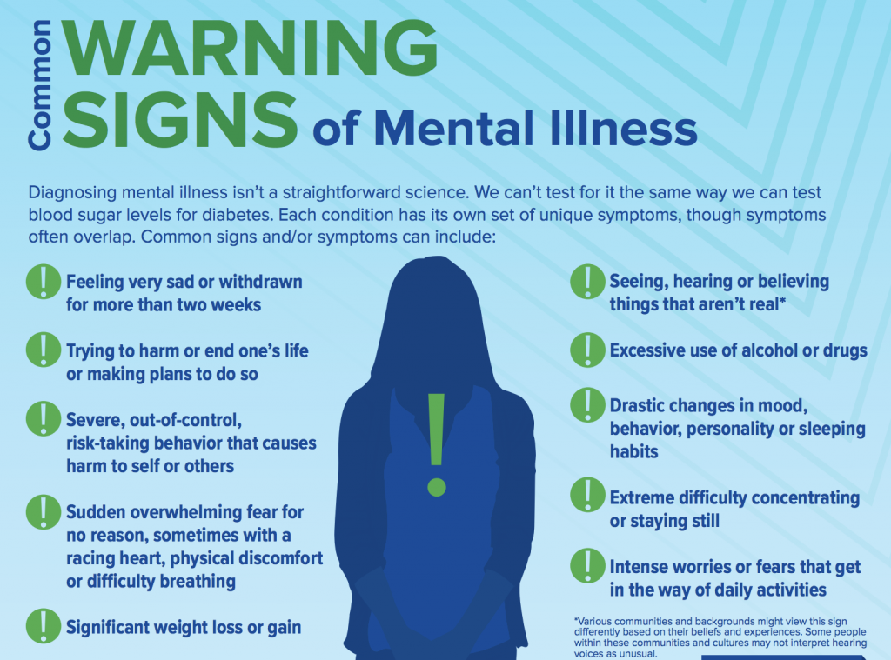

Understanding Mental Health
Mental health includes our emotional, psychological, and social well-being. It affects how we think, feel, and act. It also helps determine how we handle stress, relate to others, and make choices.

Common Mental Health Disorders
Some common mental health disorders include anxiety disorders, mood disorders (like depression), personality disorders, and psychotic disorders.
Symptoms of Mental Health Disorders
Symptoms can vary widely but may include changes in mood, personality, personal habits, and/or social withdrawal.
Treatment Options
Treatment may include therapy, medication, or a combination of both. It's important to seek help from a qualified professional.